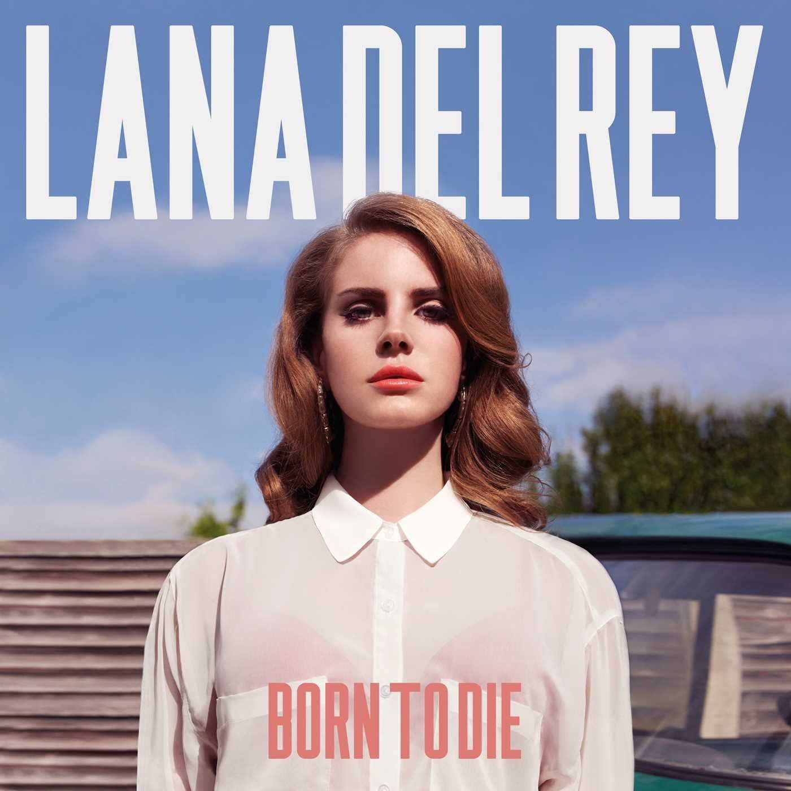
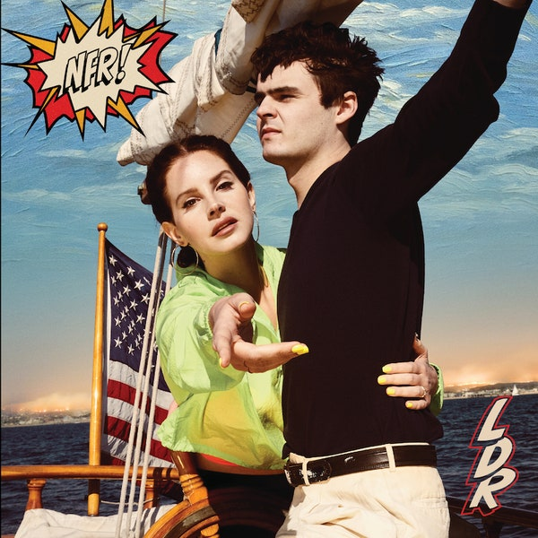

Lana Del Ray (2010)
Born to Die (2012)
Norman F. Rockwell! (2019)
Chemtrails over the Country Club (2021)
American singer-songwriter Lana Del Rey has released eight studio albums, four extended plays (EPs), 38 singles (including four as a featured artist), 16 promotional singles and one box set. She also has one leaked demo album, which was not released officially. According to Recording Industry Association of America (RIAA), Del Rey has sold 32 million singles and 5.5 million albums in the United States. Billboard rank her as the 37th Top Rock Artist of the 2010s. Del Rey has also sold 7.1 million singles units in United Kingdom.